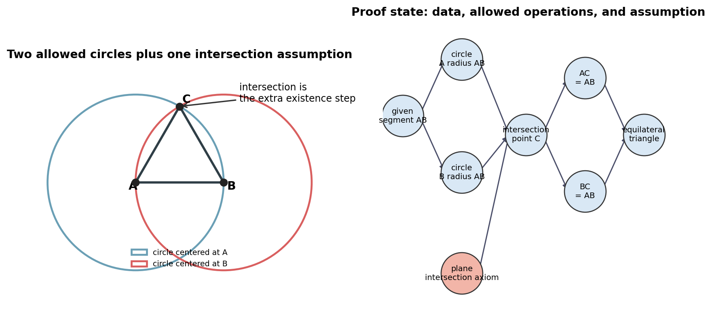
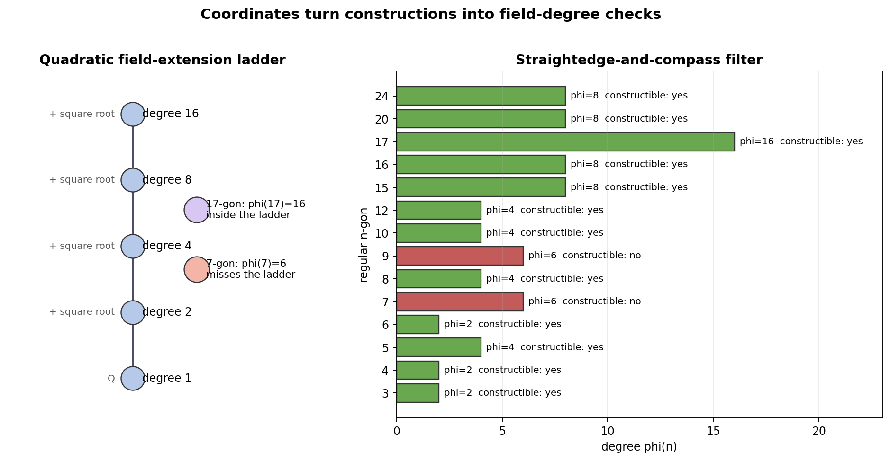
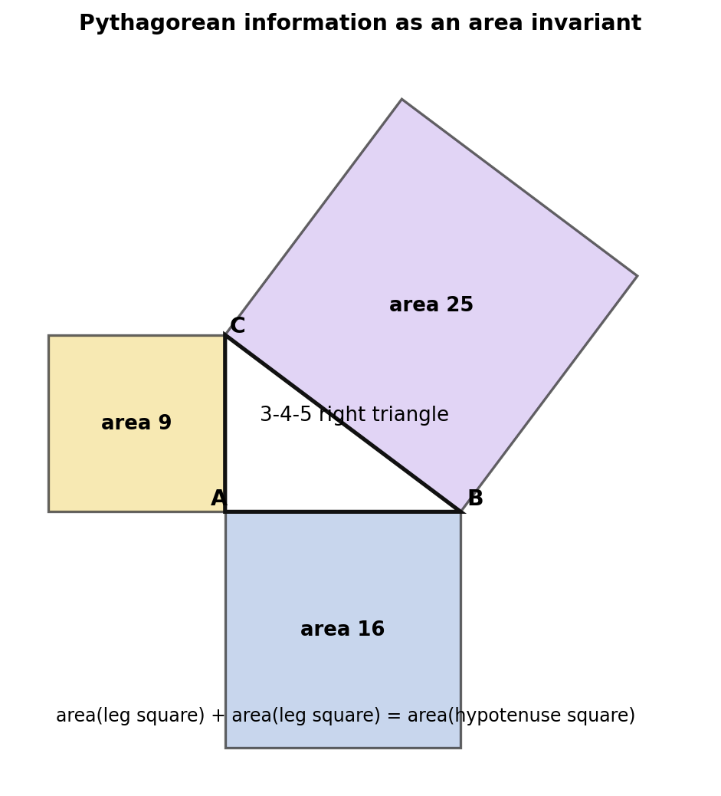
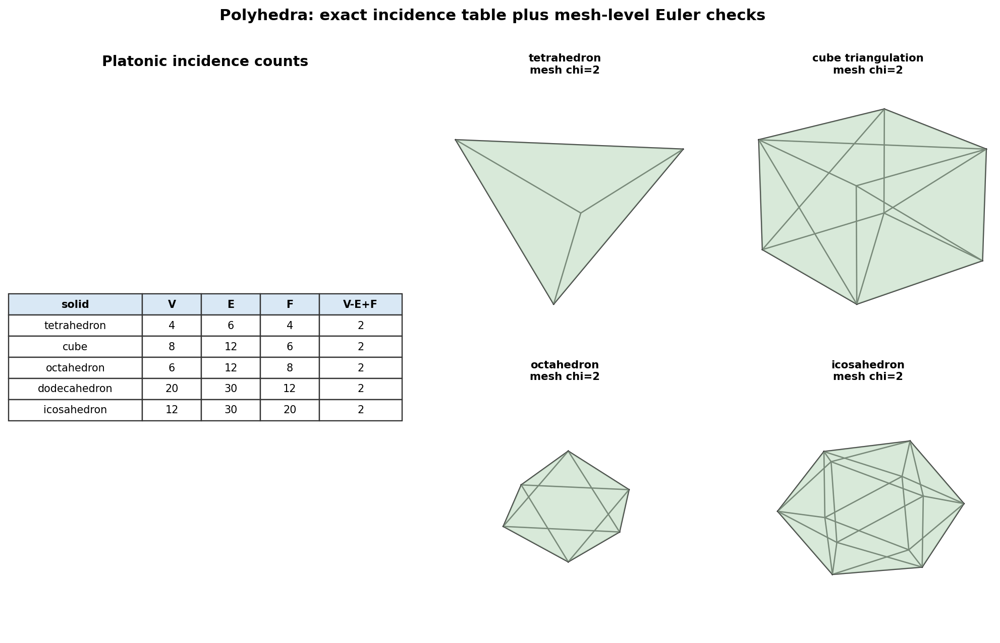

Orientation
Allowed moves raise existence questions.
Existence questions become explicit rules.
Rules can be interpreted in different worlds.
What survives translation becomes the durable object.
Representation
Construction

AB = AC = BC = 1
Axioms
Coordinates
Introduce coordinates when they expose a checkable invariant: distance, incidence, intersection, orientation, or field closure.
geometry → algebra → diagnostic → geometry
Constructibility

degree is allowed ⇔ degree is a power of 2
Area

9 + 16 = 25
For the notebook triangle, the equality is a stable check of the area relation. The geometric idea is preservation under comparison and decomposition.
Models
Hyperbolic Geometry
Interactive artifact: ../interactive/poincare-parallel-family.html
|c|2 - R2 = 1
Each circle arc meets the boundary circle at right angles, so it represents a disk geodesic.
Polyhedra
Mesh Diagnostics

Watertight triangulated surfaces in the notebook examples still satisfy V - E + F = 2.
Applied Lab
Method
Cautions
Modern geometry keeps Euclid's questions alive while making the rules and models more explicit.
Coordinates provide diagnostics, but the target is still a geometric claim with assumptions and invariants.
A model changes the interpretation of terms, not the demand for coherent rules and checkable consequences.
The productive reading is: Euclid supplies durable problems; modern geometry supplies sharper languages for asking which versions of those problems are true.
Takeaways
The next lecture begins turning this route map into formal Euclidean geometry: primitives, propositions, constructions, and the first explicit foundation questions.